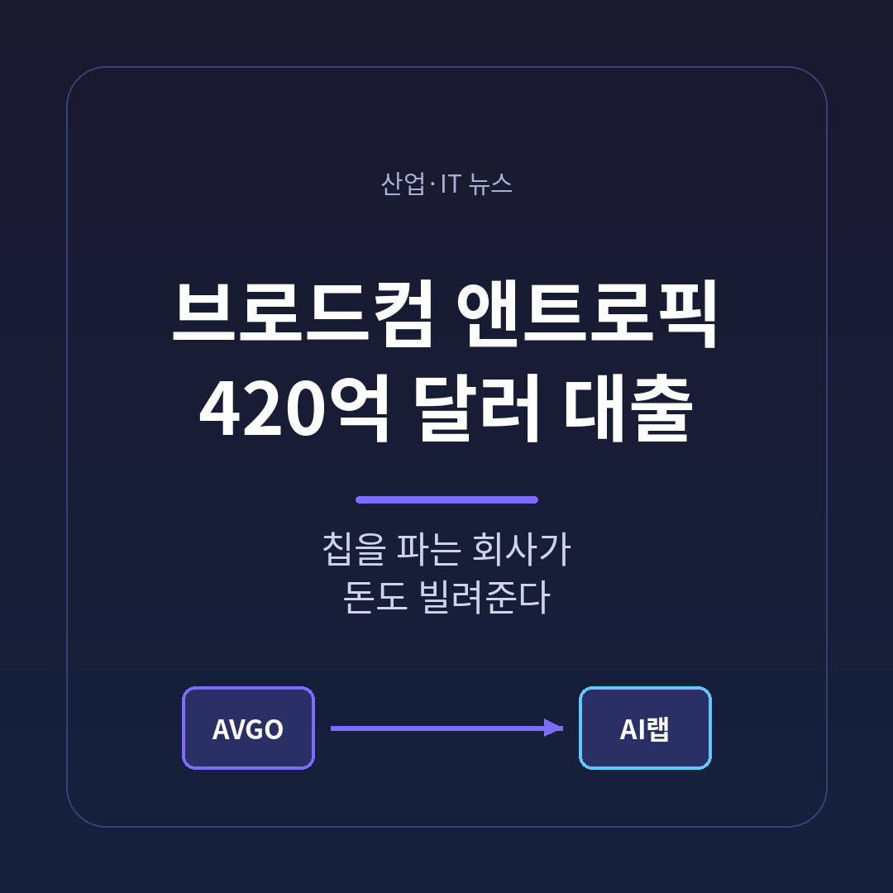
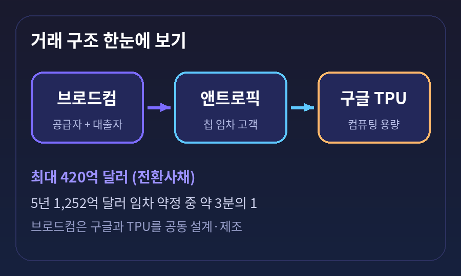
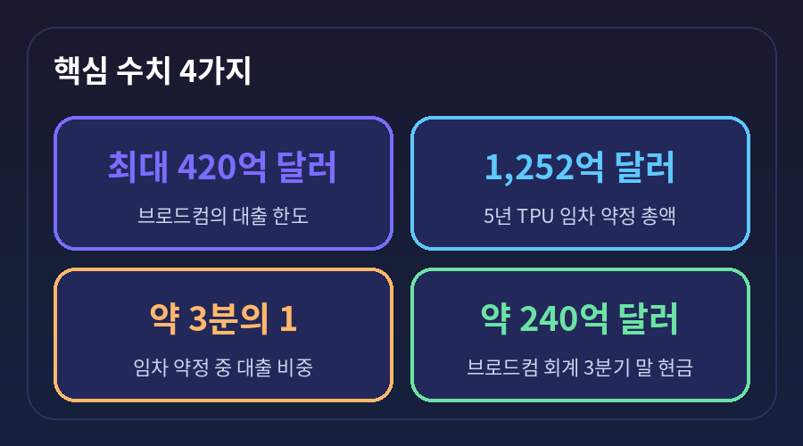
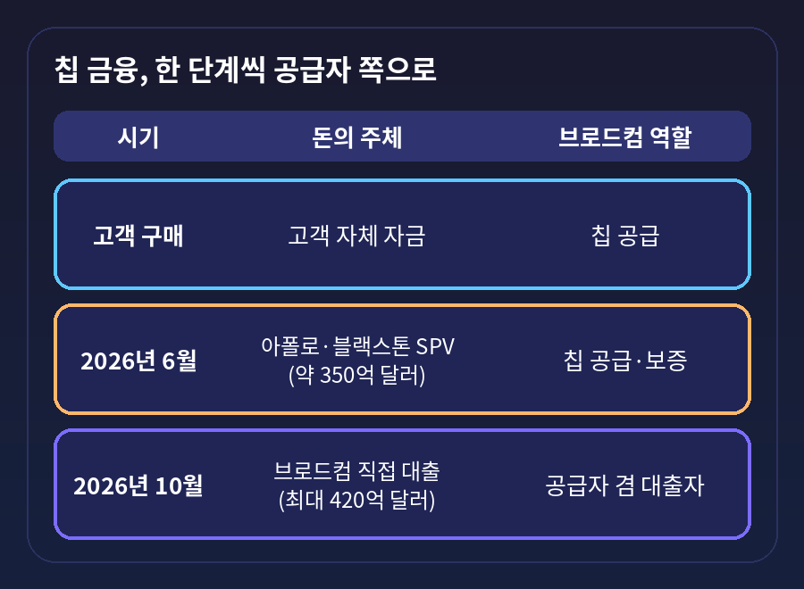
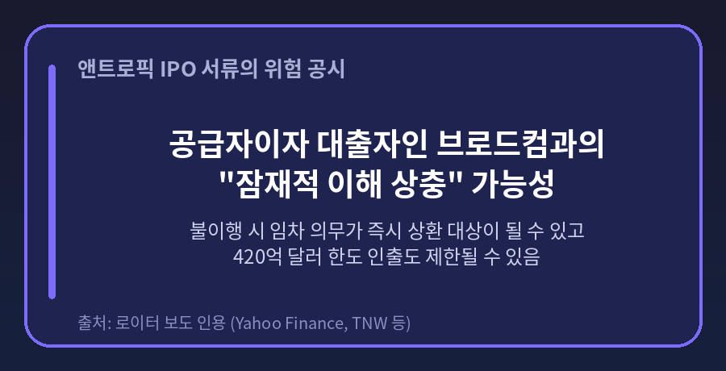
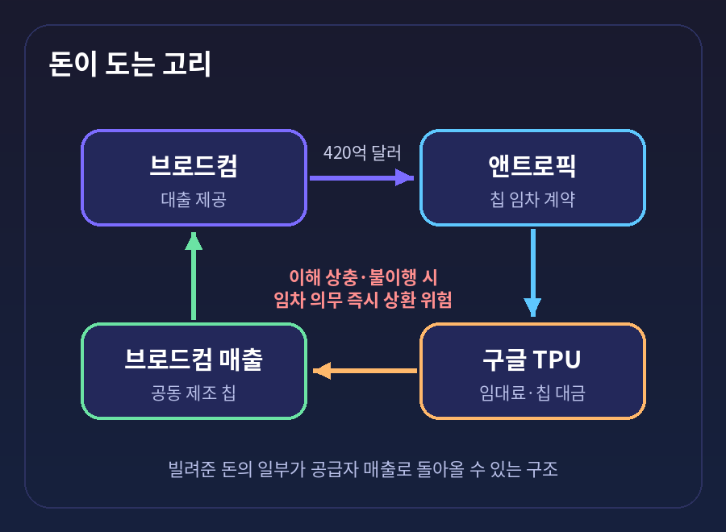

오늘은 브로드컴이 앤트로픽에 빌려주기로 한 최대 420억 달러, 우리 돈 약 56조~57조 원 규모의 대출을 정리해 보려 합니다.
2026년 10월 1일 로이터가 앤트로픽의 기업공개(IPO) 서류를 인용해 전한 내용입니다.
누가 누구에게 무엇을 빌려주는지, 그리고 왜 '순환금융'이라는 비판이 따라붙는지 차례로 살펴보겠습니다.
보도의 뼈대는 이렇습니다.
브로드컴이 앤트로픽에 최대 420억 달러를 빌려줍니다.
앤트로픽은 이 돈을 구글이 설계한 AI 칩, 텐서처리장치(TPU)의 컴퓨팅 용량을 빌려 쓰는 데 씁니다.
임차 약정의 총액은 5년간 1,252억 달러로 알려졌고, 이번 대출은 그중 약 3분의 1에 해당합니다.
형태는 전환사채입니다.
나중에 앤트로픽 주식으로 바꿀 수 있는 채권이라는 뜻입니다.
서류상 이 채권은 IPO 이전에 팔리지 않을 것으로 예상되며, 브로드컴이 추가 금융 파트너를 지정할 수 있다고 전해집니다.
한도라는 점도 짚어야 합니다. 420억 달러는 '최대' 금액이어서, 한꺼번에 나가는 돈이 아닙니다.
앤트로픽은 자금을 인출할 때 브로드컴을 수취인으로 하는 제한 계좌에 현금을 의무적으로 넣어야 합니다.
이미 2026년 4월에 현금을 예치했고, 추가 예치가 예상된다고 합니다.
돈이 앤트로픽 금고로 들어가기 전에, 칩 대금 용도로 묶이는 장치가 하나 더 있는 셈입니다.

예전엔 칩 회사가 칩을 팔고, 고객은 자기 돈이나 투자금, 은행 대출로 값을 치렀습니다.
지금은 칩 회사가 대출까지 해 줍니다.
공급자와 대출자가 한 몸이 되었다는 점이 이번 거래의 가장 큰 특징입니다.
브로드컴에게 앤트로픽은 대단히 큰 고객입니다.
앤트로픽은 2026년 브로드컴의 최대 칩 설계 고객이 되고, 2027년에는 최대 컴퓨팅 고객이 될 전망입니다.
브로드컴은 회계 2027년 AI 칩 매출을 약 1,150억 달러, 2028년을 약 2,300억 달러로 내다봅니다.
이 전망의 상당 부분이 한 고객에게 걸려 있다는 이야기이기도 합니다.
규모도 가볍지 않습니다.
브로드컴의 회계 3분기 말 현금은 약 240억 달러, 같은 분기 잉여현금흐름은 약 137억 달러로 보도됐습니다.
대출 한도 420억 달러는 보유 현금보다 큽니다.
그래서 브로드컴이 별도 조달을 통해 자금을 마련할 가능성이 거론되지만, 구체적인 조달 방식은 아직 확인되지 않았습니다.

이 거래가 갑자기 나온 것은 아닙니다.
2026년 6월에는 아폴로와 블랙스톤이 앤트로픽을 위한 약 350억 달러 규모의 칩 담보 금융을 마무리했습니다.
특수목적회사(SPV)를 세워 칩을 사고 앤트로픽에 빌려주는 방식이며, 선순위 채권에는 브로드컴의 보증이 붙어 조달 비용을 낮췄다고 전해집니다.
브로드컴이 칩을 공급하고, 앤트로픽이 불이행하면 잔존가치까지 보증하는 구조였습니다.
한 국내 매체는 같은 건을 360억 달러로 전했습니다. 소스마다 금액에 10억 달러 차이가 있어, 이 글에서는 '약 350억 달러 안팎'으로만 적습니다.
흐름을 놓고 보면 한 단계씩 공급자 쪽으로 다가온 모습입니다.
처음에는 고객이 현금으로 샀습니다.
6월에는 사모대출 자금이 SPV를 거쳐 들어왔고, 브로드컴은 뒤에서 보증을 섰습니다.
이번에는 브로드컴이 직접 돈을 빌려줍니다.

비판의 핵심은 돈이 도는 모양입니다.
브로드컴이 앤트로픽에 돈을 빌려주면, 앤트로픽은 그 돈으로 구글 TPU를 빌립니다.
그 TPU는 브로드컴이 구글과 함께 설계하고 만드는 칩입니다.
빌려준 돈의 일부가 결국 브로드컴 매출로 돌아올 수 있는 고리가 생깁니다.
SBS Biz 등 국내 매체는 이를 '순환금융'으로 지적했습니다.
앤트로픽도 서류에서 위험을 숨기지 않았습니다.
브로드컴이 하드웨어 공급자이자 대출자이기 때문에 '잠재적 이해 상충'이 생길 수 있다고 적었습니다.
칩 가격과 배분 결정이 앤트로픽의 인프라 구매를 제약할 수도 있다는 취지입니다.
또한 결제나 이행에서 불이행이 생기면 임차 의무의 상당 부분이 즉시 갚아야 할 돈으로 바뀔 수 있고, 같은 시점에 420억 달러 한도에서 돈을 꺼내는 일도 막힐 수 있다고 밝혔습니다.
어려울 때 두 곳이 동시에 조여 온다는 이야기입니다.

시장의 시선도 엇갈립니다.
Rothschild & Co의 로버트 레이타오는 "두 회사가 지금까지 이뤄진 모든 금융을 뒷받침할 만큼 매출을 낼 수 있다는 집중된 베팅처럼 느껴진다"고 말했습니다.
Seaport Research의 제이 골드버그는 "엔비디아가 대차대조표를 막대하게 동원하고 있고, 브로드컴도 따라가야 하는 처지"라고 평했습니다.
신중한 심사의 결과라기보다 경쟁 압박에 따른 선택이라는 해석입니다.
물론 다른 면도 있습니다.
브로드컴은 이 거래로 큰 고객을 장기간 붙잡아 둘 수 있습니다.
앤트로픽은 막대한 선투자 부담을 나눠 질 수 있습니다.
전환사채라서, 앤트로픽이 IPO 이후 크게 성장하면 대출자도 지분 가치를 나눠 갖습니다.
다만 금리, 전환가격, 인출 일정, 담보, 재무 약정은 공개된 서류에 없습니다.
구조의 건전성을 판단하기에는 아직 핵심 정보가 비어 있습니다.
국내 금융당국의 시각도 참고할 만합니다.
국민일보는 금융감독원이 6월 SPV 건과 관련해 AI 반도체의 담보 가치가 아직 입증되지 않았다는 점을 우려했다고 전했습니다.
앤트로픽이 칩을 쓰지 못하게 될 때 다른 곳이 대신 쓸 수 있을지 불확실하다는 지적입니다.

첫째, 앤트로픽 IPO입니다.
보도에서는 기업가치 2조 달러 안팎이 거론되지만, 공식 확정된 숫자는 아닙니다.
상장 이후 전환사채의 조건이 어떻게 드러나는지가 거래의 성격을 가릅니다.
둘째, 브로드컴의 자금 조달입니다.
시장에서는 이 거래가 브로드컴의 재무 부담을 키울 것이라는 시각과, 매출 가시성을 높여 준다는 시각이 함께 있습니다.
다음 실적 발표는 2026년 12월 9일로 알려졌습니다. 그때 구체적 설명이 나올 수 있습니다.
셋째, 다른 업체의 모방입니다.
엔비디아에 이어 브로드컴까지 금융을 앞세우면, 칩 경쟁이 성능과 가격뿐 아니라 '누가 더 좋은 조건으로 돈을 빌려주느냐'로 번질 수 있습니다.
그만큼 고객사의 자금 사정이 공급망 전체의 위험으로 옮겨 갑니다.
정리하면 이렇습니다.
이번 거래는 AI 투자의 중심이 '칩 성능'에서 '칩을 사는 돈의 출처'로 옮겨 가고 있음을 보여 줍니다.
"칩을 파는 회사가 돈까지 빌려줄 때, 위험도 같은 곳에 쌓인다."
앤트로픽의 성장이 계획대로 이어진다면 이 구조는 영리한 협력으로 기록될 것입니다.
반대로 성장이 꺾인다면 어디까지 파급될지는 아직 아무도 장담하기 어렵습니다.
공개되지 않은 조건이 하나씩 드러나는 과정을, 차분히 지켜보시길 권합니다.
※ 이 글은 공개된 보도를 정리한 정보 제공용 해설이며, 특정 종목의 투자 권유가 아닙니다. 수치는 보도 시점 기준이고 매체마다 다를 수 있습니다.
출처: 글로벌이코노믹, SBS Biz, 국민일보, 재경일보, CBC뉴스, Yahoo Finance(로이터 인용), The Next Web, 24/7 Wall St., FinanceFeeds, Capacity 등 (상세 URL은 research.md 참고)